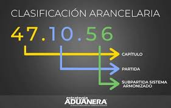

La clasificación aduanera es una actividad técnica caracterizada por su precisión y la alta responsabilidad que conlleva.
Su conocimiento es, en no pocos casos, empírico, superficial o subjetivo.
La clasificación arancelaria ha sido tratada con tanta amplitud y detalle que acrece su relación con el derecho aduanero, con el trascendental compromiso de la inviolable declaración oficial de las mercaderías, el régimen tributario aplicable, la valoración aduanera, el control de prohibiciones y las intervenciones de organismos paraduaneros.
El clasificador debe ser ordenado, analítico y objetivo, actuando con concentración, sin apremios o interrupciones, aseado de influencias y libre de presunciones, sintiendo que el método es la síntesis razonada y anticipada de la clasificación perfecta.

Qué es «Clasificar»? «Clasificar» es determinar la posición arancelaria que corresponde a una determinada mercadería en la Nomenclatura Común del Mercosur. Este código está formado por grupos de números será, cuatro-dos-dos (ejemplo: 8529.90.81) y tres dígitos más una letra si es a nivel SIM (Sistema Informático Malvina).
Comentarios
¿Por qué es importante la clasificación?
Porque:
* Determina el porcentaje de derechos de importación, tasa de estadística y del IVA.
* Determina el porcentaje de reintegro a la exportación del producto que se comercializa al exterior, siempre que todas las otras condiciones que debe cumplir dicha operación sean satisfechas.
* Determinará la necesidad de una licencia no automática o una autorización para la importación o la exportación.
Si se clasifica incorrectamente:
* Se está expuesto a sanciones establecidas en el Código Aduanero.
* Puede derivarse en el reembarco de la mercadería, si ésta se trata de producto prohibido con autorización previa y no se la poseyese.